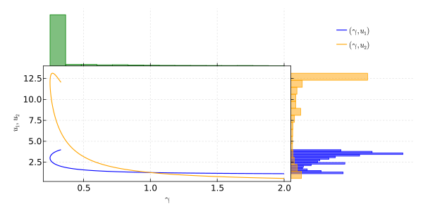
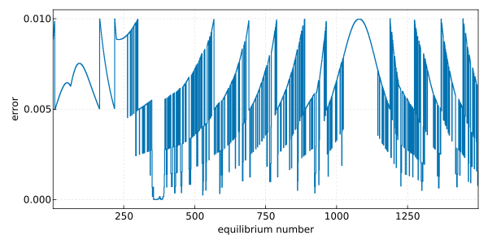

Pseudo-arclength continuation
In this example, we will prove the existence of a branch of equilibria for the FitzHugh-Nagumo model
\[\begin{cases} \displaystyle \frac{d}{dt} u(t) = f(\gamma, u(t)) := \begin{pmatrix} u_1(t)(u_1(t) - a)(1 - u_1(t)) - u_2(t) \\ \varepsilon(u_1(t) - \gamma u_2(t)) \end{pmatrix},\\ u(0) = u_0 \in \mathbb{R}^2, \end{cases}\]
where $a = 5$ and $\varepsilon = 1$.
To this end, we use the pseudo-arclength continuation and prove, at each step, that there exists a box, surrounding the linear numerical approximation, which contains the desired curve.
In a nutshell, the pseudo-arclength continuation consists in computing a sequence of numerical zeros of $f$. Starting with an initial zero $x_1 \in \mathbb{R}^3$, we retrieve an approximate tangent vector $v_1$ to the curve at $x_1$ by looking at $\ker Df(x_1)$. Then, our predictor for the next zero is set to $w := x_1 + \delta v_1$ where $\delta > 0$ represents the step size. The Newton's method is applied on the mapping $F_\text{Newton} : \mathbb{R}^3 \to \mathbb{R}^3$ given by
\[F_\text{Newton}(x) := \begin{pmatrix} (x - w_1) \cdot v_1\\ f(x) \end{pmatrix}.\]
Once the Newton's method converged to some $x_2 \in \mathbb{R}^3$, we make a linear approximation of the curve of zeros and successive tangent vectors
\[\begin{aligned} x_0(s) := x_1 + s (x_2 - x_1), \qquad \text{for all } s \in [0,1],\\ v_0(s) := v_1 + s (v_2 - v_1), \qquad \text{for all } s \in [0,1]. \end{aligned}\]
Define the mapping $F : \mathbb{R}^3 \times [0,1] \to \mathbb{R}^3$ by
\[F(x, s) := \begin{pmatrix} (x - x_0(s)) \cdot v_0(s)\\ f(x) \end{pmatrix}\]
and the fixed-point operator $T : \mathbb{R}^3 \times [0,1] \to \mathbb{R}^3$ by
\[T(x, s) := x - A F(x, s),\]
where $A : \mathbb{R}^3 \to \mathbb{R}^3$ is the injective operator corresponding to a numerical approximation of $DF(x_0(s), s)^{-1}$ for all $s \in [0, 1]$.
Let $R > 0$. We use a uniform version of the first-order Radii Polynomial Theorem such that we need to estimate $|T(x_0(s), s) - x_0(s)|_\infty$ and $\sup_{x \in \text{cl}( B_R(x_0(s)) )} |D_x T(x ,s)|_\infty$ for all $s \in [0,1]$. In particular, we have
\[|T(x_0(s), s) - x_0(s)|_\infty = \left|A \begin{pmatrix} 0 \\ f(x_0(s)) \end{pmatrix} \right|_\infty, \qquad \text{for all } s \in [0,1].\]
Whenever the proof is successful, we proceed to the next iteration of the pseudo-arclength continuation and repeat the above strategy.
We can now write our computer-assisted proof:
using RadiiPolynomial
function rigorous_pseudo_arclength(x_ini::Vector{Float64}, step_size::Float64, max_iter::Int)
n = length(x_ini)
ie_collection = Interval{Float64}[]
x_collection = [x_ini]
δ_collection = Float64[]
δ = step_size
# initialize variables for Newton's method
Df = Matrix{Float64}(undef, n-1, n)
v = vec(nullspace(Df!(Df, x_ini)))
w = Vector{Float64}(undef, n)
x = Vector{Float64}(undef, n)
F = Vector{Float64}(undef, n)
DF = Matrix{Float64}(undef, n, n)
# initialize variables for the proof
R = 1e-2
s = Interval(0.0, 1.0)
Df_interval = Matrix{Interval{Float64}}(undef, n-1, n)
v_interval = Vector{Interval{Float64}}(undef, n)
x₀_interval = Vector{Interval{Float64}}(undef, n)
x₀R_interval = Vector{Interval{Float64}}(undef, n)
F_interval = Vector{Interval{Float64}}(undef, n)
DF_interval = Matrix{Interval{Float64}}(undef, n, n)
Ω₁ = Vector{Interval{Float64}}(undef, n)
Ω₂ = Matrix{Interval{Float64}}(undef, n, n)
k = 1
while k ≤ max_iter && δ ≥ 1e-8
w .= x_collection[end] .+ δ .* v
x .= w
x, success = newton!(F_DF_NewtonPseudoArclength!(w, v),
x, F, DF;
tol = 1e-15, verbose = false)
if success
v_ = v
v = vec(nullspace(Df!(Df, x)))
if v ⋅ v_ < 0
v .= (-).(v)
end
if v == v_
v_interval .= Interval.(v_)
else
v_interval .= v_ .+ s .* Interval.(v .- v_)
end
x₀_interval .= Interval.(x_collection[end]) .+ s .* (Interval.(x) .- Interval.(x_collection[end]))
x₀R_interval .= Interval.(inf.(x₀_interval .- R), sup.(x₀_interval .+ R))
F_DF_ProofPseudoArclength!(F_interval, DF_interval, x₀_interval, x₀R_interval, v_interval)
DF .= mid.(DF_interval)
A = inv(DF)
Ω₁ .= Interval.(mag.(A * F_interval))
Ω₂ .= Interval.(mag.(A * DF_interval - I))
Y = norm(Ω₁, Inf)
Z₁ = opnorm(Ω₂, Inf)
ie = interval_of_existence(Y, Z₁, R)
if isempty(ie)
δ /= 2
else
push!(x_collection, copy(x))
push!(δ_collection, δ)
push!(ie_collection, ie)
δ *= 2
end
else
δ /= 2
end
k += 1
end
return x_collection, δ_collection, ie_collection
end
struct F_DF_NewtonPseudoArclength!
w :: Vector{Float64}
v :: Vector{Float64}
end
function (F_DF!::F_DF_NewtonPseudoArclength!)(F, DF, x)
n = length(x)
F[1] = (x - F_DF!.w) ⋅ F_DF!.v
f!(view(F, 2:n), x)
DF[1,:] .= F_DF!.v
Df!(view(DF, 2:n, :), x)
return F, DF
end
function F_DF_ProofPseudoArclength!(F, DF, x, xR, v)
n = length(x)
F[1] = 0
f!(view(F, 2:n), x)
DF[1,:] .= v
Df!(view(DF, 2:n, :), xR)
return F, DF
end
# in-place FitzHugh-Nagumo model
function f!(f, x)
a, ϵ = 5, 1
γ, u₁, u₂ = x
f[1] = u₁*(u₁ - a)*(1 - u₁) - u₂
f[2] = ϵ*(u₁ - γ*u₂)
return f
end
function Df!(Df, x)
a, ϵ = 5, 1
γ, u₁, u₂ = x
Df[1,1] = 0
Df[1,2] = a*(2u₁ - 1) + (2 - 3u₁)*u₁
Df[1,3] = -1
Df[2,1] = -ϵ*u₂
Df[2,2] = ϵ
Df[2,3] = -ϵ*γ
return Df
end
x, δ, ie = rigorous_pseudo_arclength([2, 1.129171306613029, 0.564585653306514], 0.1, 3_000)The following figure shows the numerical approximation of the branch of equilibria for the FitzHugh-Nagumo model.

The following figure shows the sharpest computed a posteriori error bound for each numerical approximation of a piece of the branch of equilibria for the FitzHugh-Nagumo model.
